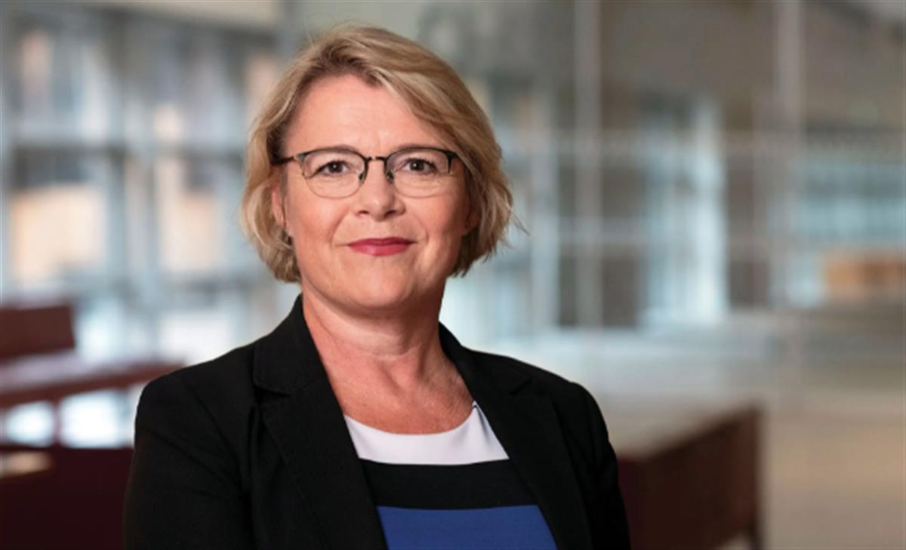
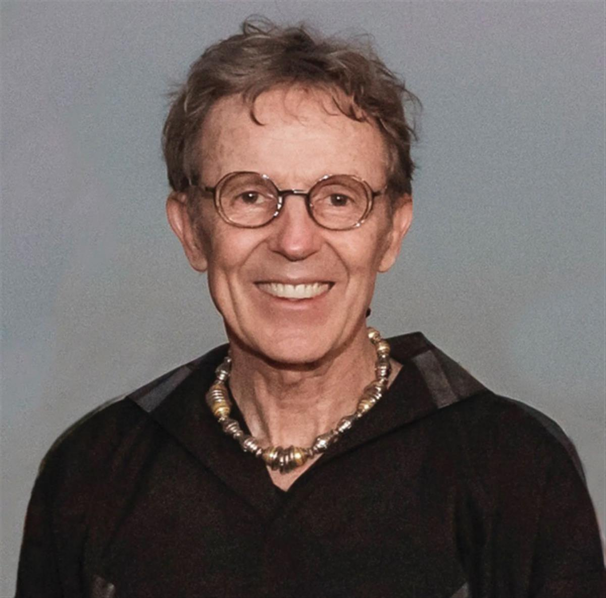
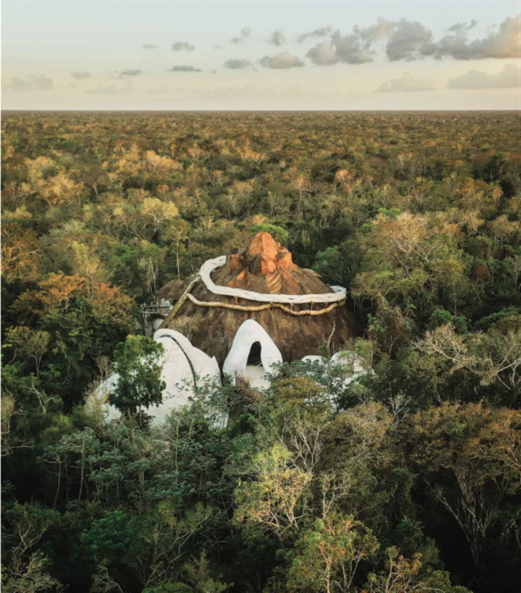
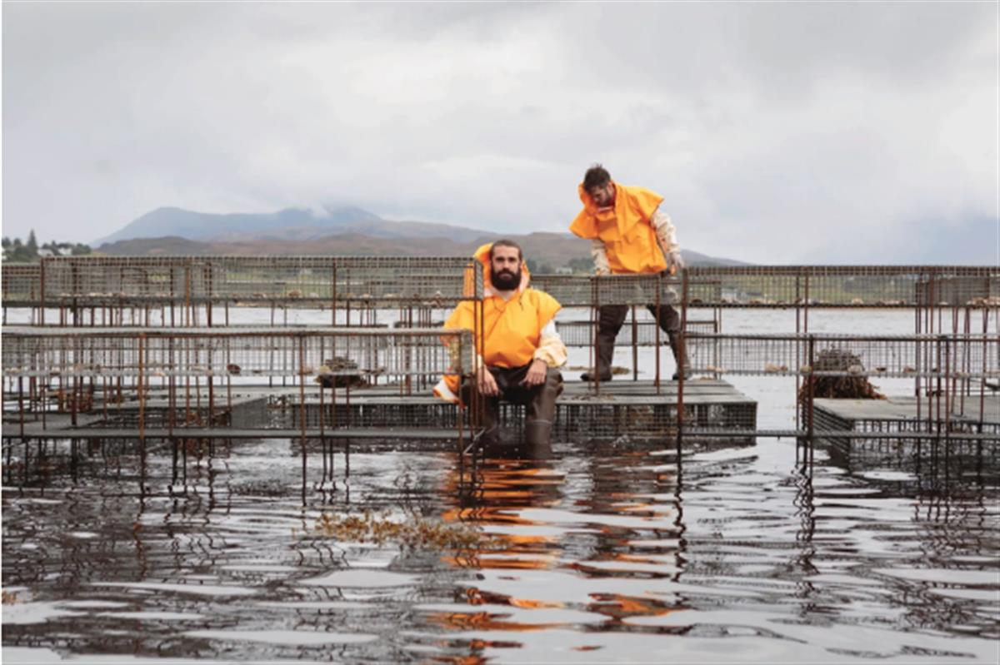
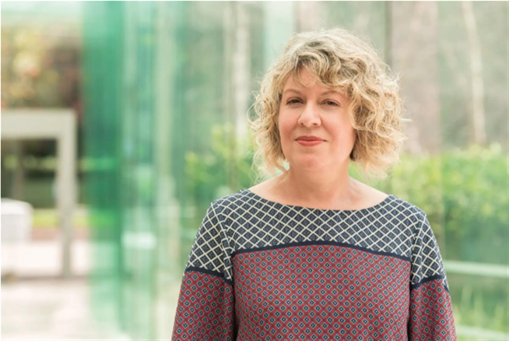
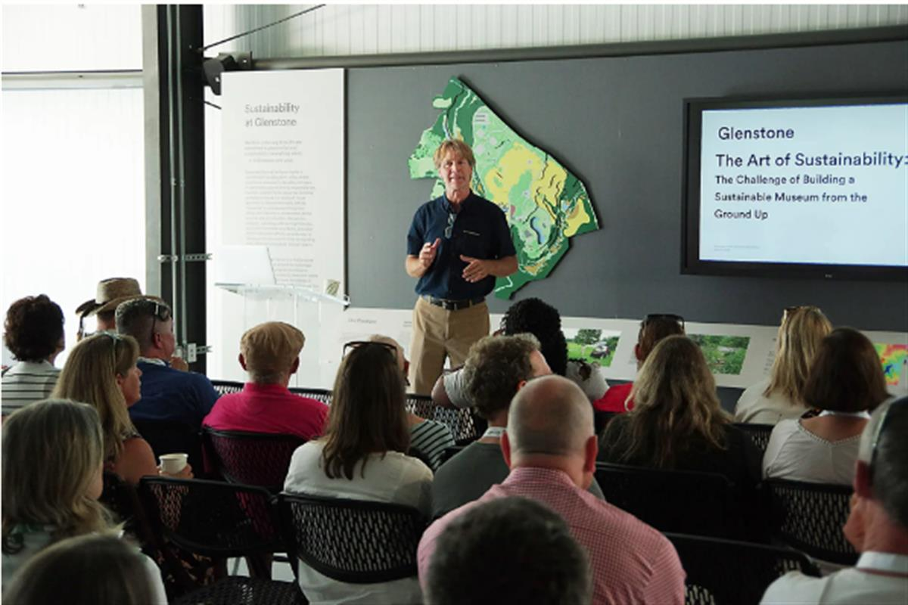
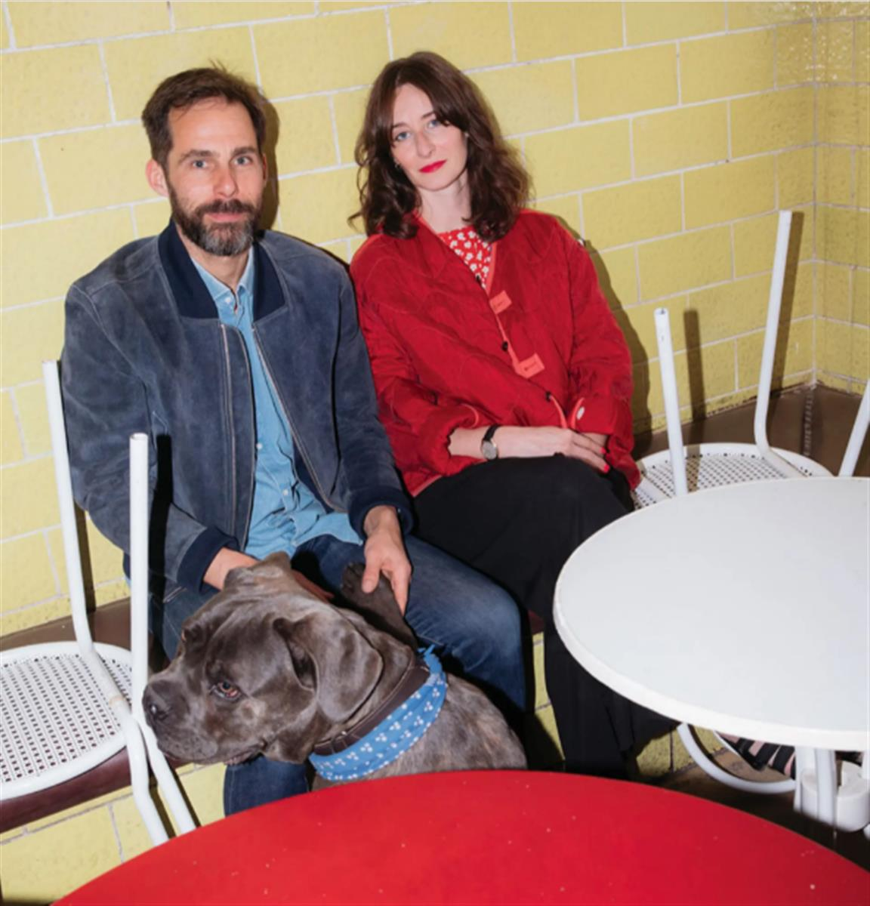
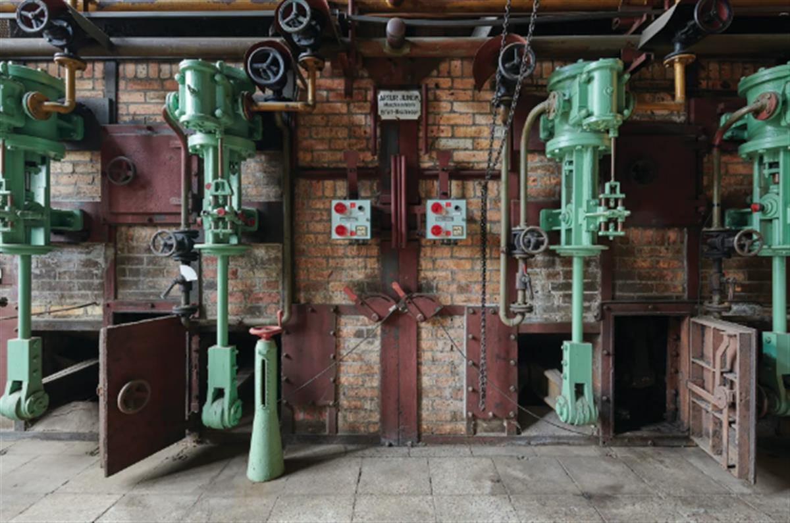

SFER IK in Mexico, an interdisciplinary arts space within the Azulik resort complex near Tulum, designed by the architect and eco-hotelier Eduardo Neira, known as RothPhoto: courtesy of Azulik
Seven ways museums are responding to the climate crisis
We talk to museum innovators around the world who are taking climate action, from the art on the walls to the food on the restaurant menu
4 November 2021
Until 12 November, representatives from almost 200 countries are taking part in the United Nations Cop26 climate summit in Glasgow, Scotland—described by the US special envoy John Kerry as the “last best hope for the world to get its act together” and curb rising greenhouse gas emissions after decades of promises. To mark the occasion, we meet seven museum innovators who are, in various roles, driving climate action forward in a typically slow-moving sector. From exhibition programming to the environmental control of collections, down to the restaurant menu, these interviews present compelling case studies for how to respond practically to a planetary problem. If they have one overarching message, it is that museums, too, must be ready to change. Will the leaders of these public institutions dare to rise to the challenge? Hannah McGivern

Gitte Ørskou, the director of Moderna MuseetPhoto: Åsa Lundén / Moderna MuseetThe museum director: Gitte Ørskou
Gitte Ørskou is the director of Moderna Museet, Sweden’s national collection of modern art. Since the 1960s it has had a reputation for hosting pioneering exhibitions and embracing experimentation. At its premises in Stockholm and Malmö, the museum will focus its 2022 programme on exhibitions created by artists on site. Albert Ehrnrooth
“We believe that the current climate situation requires immediate action and that a radical and urgent approach will unleash a new energy and power in the artists and other collaborators we are co-operating with.
Instead of shipping in art works Moderna Museet is next year going to prioritise close collaborations with artists on-site, with sustainability as our guiding principle. We have been working for some years on a long-term sustainability strategy for the museum and in all our work we now focus on minimising our carbon footprint. We ask ourselves if we should ship art works, what we should print and how we can serve more sustainable food in the restaurants. We want to use our local resources and put them at the disposal of the artists and public. We will continue to invite artists from all over the world, but we will ask them to work locally instead of shipping in works.
We seek to change the way that we as a museum work with the climate on a daily level. As a natural meeting place, it is important that we focus our audience’s attention towards climate change. But climate change is not our only objective and we don’t make exhibitions on climate change.
I believe that we have to disrupt the way that we identify ourselves as a museum and we know that we have a distinct voice within the international art world. We are part of society, and we can work as an agent of change. I believe that we can make an impact.
Will we ask Greta Thunberg to curate an exhibition? Why not?”
Lucia PietroiustiPhoto: Thaddäus Salcher
The curator: Lucia Pietroiusti
Lucia Pietroiusti spent several years as the curator of general ecology at London’s Serpentine Galleries. She is now developing the Institute for General Ecology as a new independent organisation. In 2019, she curated the Golden Lion-winning Lithuanian pavilion at the Venice Biennale, an ecological opera set on an indoor beach. Tom Seymour
“In 2017, I started to write the General Ecology Project, a proposal for restructuring the Serpentine’s public programmes into a longer-term systems-change project to create a sense of purpose around the environment. It was an experiment, a prototype, to see if something new might be possible.
In general, for the art sector and our economy at large, systems in which we are implicated don’t exactly help when it comes to making transitions and moving towards greener ways of working. It’s always hard when everything has to be self-led, and it can be slow and sluggish.
With this in mind, the General Ecology Project programmed compelling events around environmental questions, such as The Shape of a Circle in the Mind of a Fish, a series of symposia and festivals dedicated to human consciousness. The conversations we had from these events were based on the idea that dedicating oneself to the environment doesn’t mean an organisation will then struggle as a result, but will actually give it greater and new possibilities.
What happens when you host events like these is suddenly you find you have grown a community of artists and audience members, and they reflect back to you an image of your institution as one that has a long-term mission for the environment. That helped the organisation to make changes on all sorts of levels, from programming to outreach to funding and development to infrastructure.'

Eduardo Neira, known as RothPhoto: Tribaliasocial
The architect: Roth
Eduardo Neira, known as Roth, is a self-taught architect and eco-hotelier who has lived in Mexico for more than 20 years. In 2018, he completed construction of SFER IK, an arts space on the Yucatán peninsula near Tulum. Local materials were used to create structures that blend into the surrounding landscape. SFER IK will relaunch under a new artistic director, Marcello Dantas, next February. Elizabeth Mistry
“Our journey has not been a straightforward line. It is like a twisting path over the sacred ground which we promised we would respect when we bought the land from the ejidatarios (communal landowners). When we asked the spirits for permission to create an artistic space here, we undertook not to cut down a single tree or to impact negatively on the water that is all around us. The whole of the Yucatán is built on a thin layer of porous limestone with submerged caves and cenotes which are vulnerable to pollution, especially from mass tourism.
We have followed the contours of the landscape so there are no flat floors or angled corners at SFER IK. We used a mixture of poured concrete and the plentiful woody vines which are so versatile. The vines make up 20% of the renewable resources in the area. Our water is recycled in the grounds. Our aim is to be zero waste and, one day, zero carbon. When you arrive, you leave your shoes at the door. When you walk across the undulating surface you become part of the landscape.

The SFER IK arts space near Tulum in MexicoCourtesy of Azulik“Previously we have shown artists or installations which examine the impact of climate change—especially the effect on this part of the world or elsewhere in the Americas. Cecilia Bengolea and Sissel Tolaas both looked at the challenges of the Caribbean Sea on our doorstep and the possible links between deforestation and the rise in sargassum (seaweed) that is very common along the coast.
During the closure we have revisited our plans to support the next generation of artists. Local children will have the chance to experiment and revive techniques such as ceramics, macramé and textile work using decommissioned bedsheets from the hotel, alongside residencies overseen by Marcello.”

The London-based artist duo Cooking SectionsPhoto: Ruth ClarkThe artists: Cooking Sections
Daniel Fernández Pascual and Alon Schwabe form the London-based artist duo Cooking Sections, one of five artist collectives nominated for the 2021 Turner Prize. They recently launched Becoming CLIMAVORE, a project partnering with 22 UK museum restaurants to eliminate farmed salmon and introduce new dishes made with eco-friendly coastal ingredients. It is an extension of the duo’s CLIMAVORE initiative on the Isle of Skye, where an underwater oyster table acts as a community forum, promoting new ways of eating in response to the climate crisis. Frances Forbes-Carbines
“We created the Becoming CLIMAVORE project, replacing farmed salmon on the menus of 22 UK museum restaurants with sustainable alternatives, including foraged Cornish seaweeds and ocean greens, as part of our Turner Prize 2021 exhibition.
The participating museums came on board in three different ways. Some of the cafés and restaurants in the museums are run by Benugo, who also run The Magazine restaurant at the Serpentine: here we tested many of our CLIMAVORE dishes and were immediately excited to roll it out to more locations. Others like Manchester Art Gallery, The Whitworth and Aberdeen Art Gallery are part of the British Art Show 9 exhibition, which we are also part of, meaning that visitors can also experience our work at the café. Others we engaged directly or had previously worked with, like the Royal Botanic Garden Edinburgh, where we open a solo exhibition next year.
We posit that the project is a way to think of how to protect the climate—to use the Turner Prize to create a wider platform of collaboration with the museums and the restaurants, and to reimagine ways of eating.
The idea goes beyond the public coming into the museums, trying the dishes and recreating recipes at home. What is important is that the museums and the restaurants have these conversations in the first place. Too often the responsibilities are put on individuals to address the climate emergency, but we feel that what’s needed is more systemic change within institutions and governments.
Becoming CLIMAVORE is a long-term project—the food offering at the participating institutions is expanding and is projected to change over time to address more manifestations of the climate crisis.”

Amanda PagliarinoPhoto: Queensland Art GalleryThe conservator: Amanda Pagliarino
Amanda Pagliarino is the head of conservation and registration at the Queensland Art Gallery and Gallery of Modern Art in Brisbane, Australia. It has been a testing ground in recent years for a more climate-conscious, energy-efficient approach to managing collections, as she drafted new, less stringent environmental guidelines for the Australian Institute for the Conservation of Cultural Material (AICCM)—now adopted nationally. H.M.
“The conservation profession has been discussing over many years the reality of prescribing very tight parameters of relative humidity (RH) and temperature for the collection environment. The conventional range of 50 or 55 ±5% RH and 21 ±1°C places a lot of demand on air-conditioning systems to heat and chill the air and adjust humidity. If you relax it just slightly, you gain an incredible amount of energy efficiency.
The challenge is that when we borrow and lend for exhibitions, it is tied up in a legal agreement. This involves works that have high value and cultural significance and also the complexity of insurance and indemnity, so there’s a lot of trepidation in talking about temperature and RH requirements across different climate zones and regions. It’s been very hard to get traction for change.
When I started my investigation to revise the guidelines for the AICCM I knew there would be resistance to change unless we did it in a collective and consistent way that gave people confidence. With the agreement of the Council of Australian Art Museum Directors, we set up a working group representing those organisations. We talked through the practicalities and we made those changes to our processes and loan agreements at the same time.
I wanted to make sure the guidelines were practical for the Australian cultural heritage industry across the continent. In Brisbane, we’re in the subtropics but we borrow, for example, from art centres in arid climate zones and from other galleries in temperate zones. That’s why we ended up with two different parameters. The temperate specification is 40-60% RH and the tropical/subtropical parameter is 45-65% RH. The temperature range is 15-25°C for both.
It’s timely for conservators to embrace new collection management practices and to provide relevant technical and collection care information to their directors and executives, because unless you have directors on board you can’t get that change.”

Paul Tukey at Glenstone's Environmental CenterCourtesy of Paul TukeyThe sustainability specialist: Paul Tukey
Paul Tukey is the director of environmental stewardship at Glenstone, the free-admission private museum established by the US collectors Mitchell and Emily Rales, which is set on a 230-acre estate in Potomac, Maryland. Billed as a combined experience of art, architecture and nature, Glenstone opened a dedicated Environmental Center in 2019. H.M.
“At Glenstone, our philosophy is that everyone should be engaged in sustainability initiatives for us to be successful. We have a Green Team that meets regularly, with representation from almost every department. Every associate is required to attend sustainability training at the start of their employment.
We focus on eight areas: organic land management, reforestation of the suburban landscape, management of invasive species, water conservation, energy conservation, recycling, watershed restoration, and composting. Among the most significant achievements is 11-plus years of managing the landscape without chemical fertilisers and pesticides, the restoration of nearly three miles of streams, wetlands and watersheds, and being recognised as one of the most energy-efficient museums that report data to the International Association of Museum Facilities Administrators.
Jeff Koons’s Split-Rocker (2000) at GlenstoneCourtesy of Glenstone
“Taking a sustainable approach to a building project often requires out-of-the-box conversations with municipal officials and permitting agencies. The Pavilions expansion, completed in 2018, is built 50ft down into the earth, which helps give the building its incredible energy efficiencies. Nearly 50% of the building designed by Thomas Phifer and Partners is covered in a green roof, which insulates, but also provides invaluable habitat and watershed conservation. We worked with Adam Greenspan and PWP Landscape to design more than 40 acres of native meadows, which feed native insects and birds and includes the acre of meadow that grows on the roof.
All our initiatives are on display at the Environmental Center, which also functions as the grounds team’s operations facility. The centre allows us to share the message through tours, panel discussions or meetings with environmental groups.
Sharing information with other organisations is currently the primary focus of my work. We learned so much from others when we started our journey of expansion. We constantly try to pay it forward. Being sustainable—using fewer resources, becoming more thoughtful—ultimately saves every organisation time and money.”

Pablo Wendel and Helen Turner, the co-directors of E-WERK LuckenwaldePhoto: © Lukas Korschan for The FACEThe art energy producer: Pablo Wendel
Pablo Wendel is an artist and the founder of two initiatives powered by ecological sustainability: Performance Electrics, a non-profit that supplies energy generated from art projects to German households and institutions, and the arts centre E-WERK Luckenwalde, which he co-directs with the curator Helen Turner. A defunct coal power station south of Berlin, E-WERK has been converted to run entirely on carbon-neutral biomass. H.M.
“Next year it will be ten years since I first had the idea of ‘Kunststrom’, to produce electricity with art. I was struggling to make my living with ephemeral, non-material art. I couldn’t afford studio rent or my electrical bills. I started to use recycled materials to build my own studio and the infrastructure for renewable energy.
At Performance Electrics and E-WERK Luckenwalde we use conceptual methods like wind sculptures and solar panel installations to create energy. It’s about the aesthetic experience. We put profits back into the cultural concept to build more sustainable projects. When people change energy providers to us, they support art. Museums are enormous consumers of energy. They spend more on those side costs than on the art programme. Through a tiny switch of energy providers, the money can go back into art.
When I saw the abandoned power station in Luckenwalde I was electrified. I thought it needed to produce Kunststrom. With my partner, Helen Turner, we had the idea to turn it into a public space, running with our own energy and focusing on the topic of energy. Not just electricity, but every field in our lives depends on fossil energy. We wanted to create an art place that runs autonomously.

The engine room at E-WERK Luckenwalde, a defunct coal power station turned into a carbon-neutral arts centrePhoto: © Ben Westoby and E-WERK Luckenwalde“With the wood gas energy we produce we are totally CO2-neutral, but also generate some income. The electricity is way more than we need—the rest is sold to the national grid. Using the ‘grey energy’ in the building, we try to recycle everything. E-WERK Luckenwalde is full of old machines that we have fixed ourselves. We’ve re-used local materials to build the infrastructure for exhibitions.
We wanted to use the old coal station as an image, transform it into an example of how progress in society is possible. Even with a small crew of artists and engineers, we’ve proven it. I really believe it’s possible on a bigger scale.
The power we have here is to make people experience this change emotionally. Sustainability is not a question of technology but of perception. I think art can have a big impact on our mindset. That’s what we can provide with this place: room to think and reflect. That’s the beginning of a change.”
SOURCE: THE ART NEWSPAPER